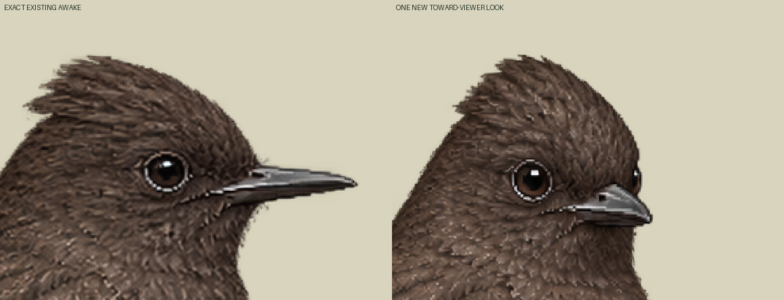
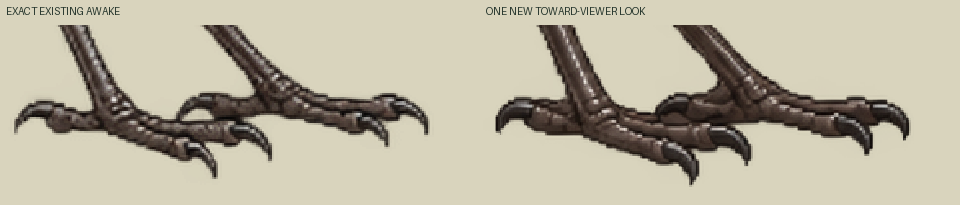

One actual new drawing; zero new neutral/blink. This own profile has awake-only idle and explicit one-shot look: awake30ticks → turned12ticks → exact awake30ticks at30Hz. Two distinct poses, no generated head-turn intermediates or smooth-turn claim. Existing neutral/blink intake remains untouched.
Normal display uses the existing 90.94736842105263 world-unit canvas at the same CSS size; unchanged awake bird is54world units wide. New head projection shortens the bill/envelope; no per-pose refitting. Existing density19/18, pivot57,75 and positive foot reference pixels53,74 and58,74 are retained. Requested head yaw25–35° is an art direction, not a measured angle.


Loading exact two-frame atlas…
Bill/head markers are actual positive-alpha raster samples with anatomical uncertainty. Feet are technical alpha references, not physical sole certification. Natural look quality is judged at yard size; body-pixel equality is not an admission gate. Existing warm-brown/pale-edge plumage is preserved. Current Mac schema/Sharp validation and actual yard binding remain pending; the explicit look clip must be confirmed there.